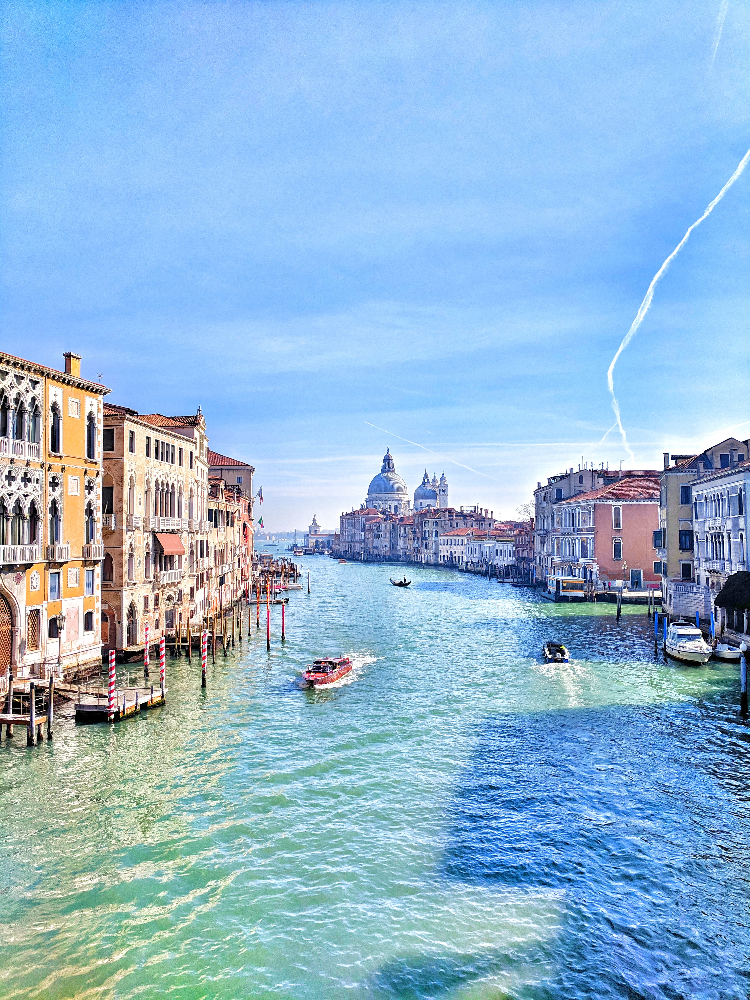

The thousand year existence of the Venetian Republic can be roughly divided into three main periods: the very beginning, when a population of bargemen became a seagoing nation sailing, trading and fighting in many parts of the Mediterranean; a second period of extraordinary prosperity which saw the consolidation of their power and government followed by the expansion towards the Italian mainland; a third and final one at the turn of the 16th C when we see the beginning of a decline and decadence which eventually culminated with the fall of the Republic by Napoleon in 1797.